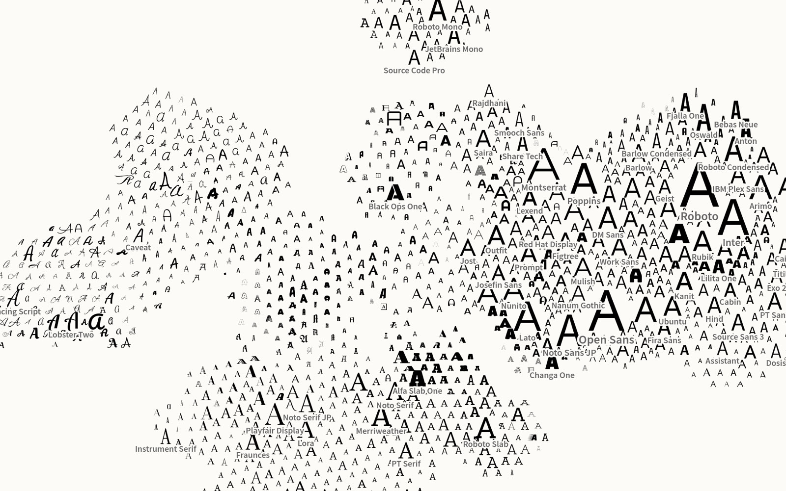

01
Usage
Size by use
Each glyph grows with how often Google serves it to websites. Log scale, and big glyphs push their neighbours aside instead of covering them.
4 fontsget half of all Google Fonts views. Roboto alone gets a quarter.
Open the experiment